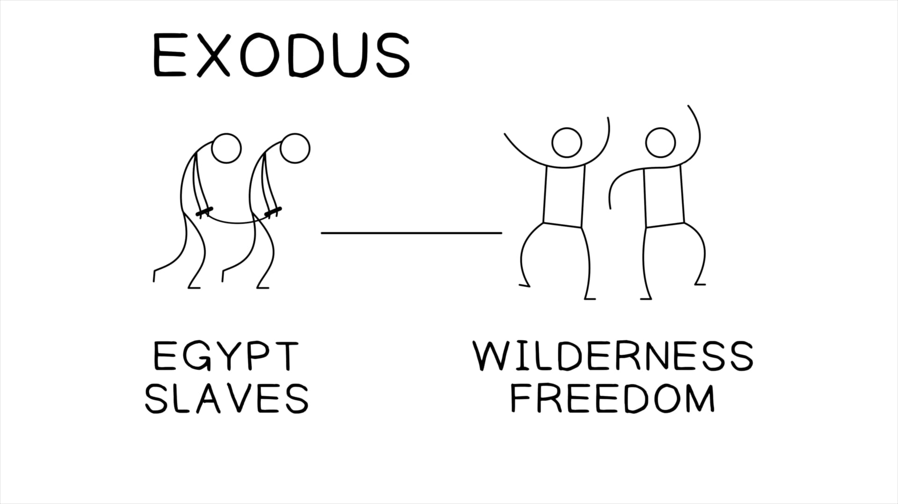

Sessão 14: A História de Israel RemixadaSession 14: Israel’s History Remixed
Principais LiçõesKey Takeaways
A retórica de Ezequiel se intensifica enquanto ele remixa a história de Israel para enfatizar o seu verdadeiro significado.Ezekiel’s rhetoric intensifies as he remixes Israel’s history to emphasize its true meaning.
Israel ainda está no Egito, escravizado aos seus ídolos, e Deus os tirará para o deserto das nações. No exílio, eles serão libertos para adorar Yahweh.Israel is still in Egypt, enslaved to their idols, and God will bring them out into the wilderness of the nations. In exile they will be freed to worship Yahweh.
O templo de Jerusalém é frequentemente retratado de forma negativa, enquanto o tabernáculo do deserto é apresentado como o ápice da presença de Deus com o seu povo.The Jerusalem temple is often portrayed in a negative light, while the wilderness tabernacle is presented as the pinnacle of God’s presence with his people.
O dilúvio e o deserto são imagens de morte e des-criação. Ambos são maneiras de caracterizar experiências que transformam o povo de Deus e levam à nova criação de Deus.The flood and the wilderness are images of death and de-creation. They are both ways to characterize experiences that transform God’s people and lead to God’s new creation.
Tradução e Design Literário de Ezequiel 20:1-44Translation and Literary Design of Ezekiel 20:1-44
Ezequiel 20:1-44. Tradução e Design Literário por Tim Mackie para BibleProject Classroom: Ezequiel (2021).Ezekiel 20:1-44. Translation and Literary Design by Tim Mackie for BibleProject Classroom: Ezekiel (2021).
20:1-5
Os Anciãos de IsraelIsrael’s Elders
Os anciãos de Israel vêm a Ezequiel para consultar YahwehIsrael’s elders come to Ezekiel to inquire of Yahweh
20:6-29
20:6-9 Geração 1Generation 1:a geração do Êxodo no Egito, Yahweh jura trazê-los à terra prometidaExodus generation in Egypt, Yahweh swears to bring them to the promised land
20:10-17 Geração 2Generation 2:a geração do Êxodo no deserto, eles rejeitam os estatutos, juízos e sábados de YahwehExodus generation in the wilderness, they reject Yahweh’s statutes, judgments, and Sabbaths
20:18-26 Geração 3Generation 3:os filhos da geração do Êxodo no deserto, eles rejeitam os estatutos, juízos e sábados de YahwehChildren of Exodus generation in the wilderness, they reject Yahweh’s statutes, judgments, and Sabbaths
20:27-29 Geração 4Generation 4:os filhos da geração do Êxodo na terra prometidaChildren of Exodus generation in the promised land
20:30-44
20:30-32Israel foi contaminado pelos ídolos que queria servir (שרת) — “e vocês querem me consultar?!”Israel has been defiled by the idols it wanted to serve (שרת) — “and you want to inquire of me?!”
20:33-38Yahweh jura trazer Israel de volta ao “deserto das nações,” purificá-los e fazer aliança com elesYahweh swears on oath to bring Israel back into the “wilderness of the nations,” purify them and enter into a covenant with them
20:39-44Israel pode se tornar servo (עבד) dos seus ídolos até o dia em que Yahweh os restaurar; então adorarão Yahweh num templo restauradoIsrael can become a servant (עבד) to its idols until the day Yahweh restores them, then they will worship Yahweh in a restored temple
1No sétimo ano,1 In the seventh year, no quinto mês,in the fifth month, no décimo dia do mês,on the tenth day of the month, alguns dos anciãos de Israel vieram consultar Yahweh,some of the elders of Israel came to inquire of Yahweh, e sentaram-se diante de mim.and they sat before me. 2E a palavra de Yahweh veio a mim:2 And the word of Yahweh came to me: 3“Filho de um humano,3 “Son of a human, fala aos anciãos de Israel,speak to the elders of Israel, e diz-lhes,and say to them, Assim diz Yahweh Elohim,Thus says Yahweh Elohim, É para me consultar que vocês vêm?Is it to inquire of me that you come? Como eu vivo, declara Yahweh Elohim,As I live, declares Yahweh Elohim, eu não serei consultado por vocês.I will not be inquired of by you. 4Você vai julgá-los, filho de um humano,4 Will you judge them, son of a human, você vai julgá-los?will you judge them? Deixe-os conhecer as abominações dos seus pais,Let them know the abominations of their fathers, 5ae diz-lhes,5a and say to them, Assim diz Yahweh Elohim:Thus says Yahweh Elohim: 5bNo dia em que escolhi Israel,5b On the day when I chose Israel, Levantei a minha mão em juramento à semente da casa de Jacó,I lifted my hand on oath to the seed of the house of Jacob, fazendo-me conhecido a eles na terra do Egito;making myself known to them in the land of Egypt; Levantei a minha mão em juramento a eles, dizendo,I lifted my hand on oath to them, saying, ‘Eu sou Yahweh, o seu Elohim.’‘I am Yahweh your Elohim.’ 6Naquele dia levantei a minha mão em juramento a eles,6 On that day I lifted my hand on oath to them, que eu os tiraria da terra do Egito,that I would bring them out of the land of Egypt, para uma terra que eu tinha procurado para eles,into a land that I had searched out for them, uma terra que mana leite e mel,a land flowing with milk and honey, a mais esplêndida de todas as terras.the most splendorous of all lands. 7E eu lhes disse,7 And I said to them, ‘Cada um de vocês lance fora as coisas detestáveis dos seus olhos,‘Each of you cast away the detestable things of your eyes, e não se tornem impuros com os ídolos do Egito;and do not make yourselves impure with the idols of Egypt; eu sou Yahweh, o seu Elohim.’I am Yahweh your Elohim.’ 8Mas eles se rebelaram contra mim,8 But they rebelled against me, e não estavam dispostos a me ouvir.and they were not willing to listen to me. Nenhum deles lançou fora as coisas detestáveis dos seus olhos,None of them cast away the detestable things of their eyes, nem abandonaram os ídolos do Egito.nor did they forsake the idols of Egypt. Então eu disse que derramaria a minha ira ardente sobre elesThen I said I would pour out my hot-anger upon them e acabaria com a minha ira contra eles no meio da terra do Egito.and finish my anger against them in the midst of the land of Egypt.
#1: A Geração do Êxodo no Egito#1: The Exodus Generation in Egypt
9Mas agi por causa do9 But I acted for the sake of meu nome,my name, para que não fosse profanado aos olhos das nações entre as quais eles viviamthat it should not be defiled in the eyes of the nations among whom they lived aos olhos das quais eu me fiz conhecido a eles,in whose eyes I made myself known to them, tirando-os da terra do Egito.by bringing them out of the land of Egypt. 10Então eu os tirei da terra do Egito,10 So I led them out of the land of Egypt, e os trouxe para o deserto,and I brought them into the wilderness, 11e lhes dei os meus estatutos,11 and I gave them my statutes, e lhes fiz conhecer os meus juízos,and I made known to them my judgments, os quais, se uma pessoa os pratica, elawhich, if a person does them, he will terá vida.have life. 12E também lhes dei os meus sábados,12 And also, I gave them my Sabbaths, como sinal entre mim e eles,as a sign between me and them, para que soubessem que eu sou Yahweh, que os santifica.that they might know that I am Yahweh who makes them holy. 13Mas a casa de Israel se rebelou contra mim no deserto.13 But the house of Israel rebelled against me in the wilderness. Eles não andaram nos meus estatutos,They did not walk in my statutes, e rejeitaram os meus juízos,and they rejected my judgments, os quais, se uma pessoa os pratica, elawhich, if a person does them, he will terá vida;have life; e profanaram os meus sábados.and my Sabbaths they defiled. Então eu disse que derramaria a minha ira ardente sobre eles no deserto,So I said I would pour out my hot-anger upon them in the wilderness, para acabar com eles.to bring them to an end. 14Mas agi por causa do14 But I acted for the sake of meu nome,my name, para que não fosse profanado aos olhos das nações,so it wouldn’t be defiled in the eyes of the nations, aos olhos das quais eu os tinha tirado.in whose eyes I had brought them out. 15E também levantei a minha mão em juramento a eles no deserto,15 And also I lifted my hand on oath to them in the wilderness, que eu não os traria para a terra que lhes tinha dado,that I would not bring them into the land that I had given them, uma terra que mana leite e mel,a land flowing with milk and honey, a mais esplêndida de todas as terras,the most splendorous of all lands, 16porque rejeitaram os meus juízos,16 because they rejected my judgments, e não andaram nos meus estatutos,and they did not walk in my statutes, e profanaram os meus sábados;and they defiled my Sabbaths; pois o seu coração foi atrás dos seus ídolos.for their heart went after their idols. 17Mas, o meu olho teve compaixão deles,17 But, my eye had pity on them, e eu não os destruí nem acabei com eles no deserto.and I did not destroy them or bring them to an end in the wilderness. 18E eu disse aos seus filhos no deserto,18 And I said to their children in the wilderness, ‘Não andem nos estatutos dos seus pais,‘Do not walk in the statutes of your fathers, e não guardem os juízos deles,and don’t keep their judgments, e não se tornem impuros com os ídolos deles,and don’t make yourselves impure with their idols, 19eu sou Yahweh, o seu Elohim;19 I am Yahweh your Elohim; andem nos meus estatutos,walk in my statutes, e guardem os meus juízos e os pratiquem,and keep my judgments and do them, 20e tratem os meus sábados como santos,20 and treat my Sabbaths as holy, para que sejam um sinal entre mim e vocês,that they may be a sign between me and you, para que vocês saibam que eu sou Yahweh, o seu Elohim.’that you may know that I am Yahweh your Elohim.’
#2: A Geração do Êxodo no Deserto#2: The Exodus Generation in the Wilderness
21Mas os filhos se rebelaram contra mim.21 But the children rebelled against me. Eles não andaram nos meus estatutos,They did not walk in my statutes, e não guardaram os meus juízos, para praticá-los,and they did not keep my judgments, to do them, os quais, se uma pessoa os pratica, elawhich, if a person does them, he will terá vida;have life; profanaram os meus sábados.they defiled my Sabbaths. Então eu disse que derramaria a minha ira ardente sobre eles,So I said I would pour out my hot-anger upon them, e daria fim à minha ira contra eles no deserto.and bring an end to my anger against them in the wilderness. 22Mas eu recuei a minha mão,22 But I turned back my hand, e agi por causa domeu nome,and acted for the sake ofmy name, para que não fosse profanado à vista das nações,so it wouldn’t be defiled in the sight of the nations, à vista das quais eu os tinha tirado.in whose sight I had brought them out. 23Além disso, levantei a minha mão em juramento a eles no deserto,23 Moreover, I lifted my hand on oath to them in the wilderness, que eu os espalharia entre as nações,that I would scatter them among the nations, e os dispersaria pelas terras,and disperse them through the lands, 24porque não guardaram os meus juízos,24 because they did not keep my judgments, e rejeitaram os meus estatutos,and they rejected my statutes, e profanaram os meus sábados,and defiled my Sabbaths, e os seus olhos estavam postos nos ídolos dos seus pais.and their eyes were set on their fathers’ idols. 25Além disso, lhes dei estatutos que não eram bons,25 Moreover, I gave them statutes that were not good, e juízos pelos quais não poderiamand judgments by which they could not ter vida,have life, 26e os tornei impuros através das suas ofertas,26 and I rendered them impure through their gifts, enquanto ofereciam todo primogênito,as they offered up every firstborn, para que eu pudesse devastá-los.so that I could devastate them. para que soubessem que eu sou Yahweh.so that they might know that I am Yahweh.
#3: Os Filhos da Geração do Êxodo#3: The Children of the Exodus Generation
27Portanto, filho de um humano,27 Therefore, son of a human, fala à casa de Israel,speak to the house of Israel, e diz-lhes,and say to them, ‘Assim diz Yahweh Elohim:‘Thus says Yahweh Elohim: Nisto também os seus pais me blasfemaram,In this also your fathers blasphemed me, cometendo traição contra mim.by committing treachery against me. 28Pois quando eu os tinha trazido para a terra,28 For when I had brought them into the land, que levantei a minha mão em juramento para lhes dar,which I lifted my hand on oath to give them, e em qualquer lugar onde viam qualquer colina alta ou qualquer árvore frondosa,and wherever they saw any high hill or any leafy tree, e lá ofereciam os seus sacrifícios,and there they offered their sacrifices, e lá apresentavam a provocação da sua oferta;and there they presented the provocation of their offering; e lá enviavam os seus aromas agradáveis,and there they sent up their pleasing aromas, e lá derramavam as suas ofertas de bebida.and there they poured out their drink offerings. 29E eu lhes disse,29 And I said to them, ‘O que é o lugar alto (hebr. bamah) a que vocês vão?’‘What is the high place (Heb. bamah) to which you go?’ Então o seu nome é chamado “Bamah” até hoje.So its name is called “Bamah” to this day.
#4: A Geração que Entrou na Terra Prometida#4: The Generation That Entered the Promised Land
30Portanto, dize à casa de Israel,30 Therefore say to the house of Israel, Assim diz Yahweh Elohim:Thus says Yahweh Elohim: Vocês vão se tornar impuros, do jeito dos seus pais,Will you make yourselves impure, in the way of your fathers, e se prostituir atrás das coisas detestáveis deles?and go prostituting after their detestable things? 31Quando vocês apresentam as suas ofertas,31 When you present your gifts, e oferecem os seus filhos no fogo,and offer up your children in fire, vocês se tornam impuros com todos os seus ídolos até hoje.you make yourselves impure with all your idols to this day. E serei consultado por vocês, ó casa de Israel?And shall I be inquired of by you, O house of Israel? Como eu vivo, declara Yahweh Elohim,As I live, declares Yahweh Elohim, eu não serei consultado por vocês.I will not be inquired of by you. 32O que sobe na sua mente,32 What comes up in your mind, isso nunca acontecerá — o pensamento,it will never happen—the thought, ‘Sejamos como as nações,‘Let us be like the nations, como as tribos dos países,like the tribes of the countries, e adorar madeira e pedra.’and worship wood and stone.’ 33Como eu vivo, declara Yahweh Elohim,33 As I live, declares Yahweh Elohim, certamente com uma mão poderosa e um braço estendido,surely with a mighty hand and an outstretched arm, e com ira ardente derramada,and with hot-anger poured out, eu me tornarei rei sobre vocês.I will become king over you. 34Eu os tirarei de entre os povos,34 I will bring you out from the peoples, e eu os ajuntarei das terras onde estão espalhados,and I will gather you out of the lands where you are scattered, com uma mão poderosa e um braço estendido,with a mighty hand and an outstretched arm, e com ira ardente derramada.and with hot-anger poured out. 35E eu os trarei para o deserto dos povos,35 And I will bring you into the wilderness of the peoples, e ali entrarei em juízo com vocês face a face;and there I will enter into judgment with you face to face; 36assim como entrei em juízo com os seus pais,36 just as I entered into judgment with your fathers, no deserto da terra do Egito,in the wilderness of the land of Egypt, assim entrarei em juízo com vocês,so I will enter into judgment with you, declara Yahweh Elohim.declares Yahweh Elohim. 37Eu os farei passar debaixo do cajado,37 I will make you pass under the rod, e eu os trarei para o vínculo da aliança,and I will bring you into the bond of the covenant, 38Eu purgarei os rebeldes de entre vocês,38 I will purge out the rebels from among you, e aqueles que transgridem contra mim.and those who transgress against me. Eu os tirarei da terra onde peregrinam,I will bring them out of the land where they sojourn, mas eles não entrarão na terra de Israel.but they shall not enter the land of Israel. Então vocês saberão que eu sou Yahweh.Then you will know that I am Yahweh.
A Geração de EzequielEzekiel’s Generation
39Quanto a vocês, ó casa de Israel,39 As for you, O house of Israel, assim diz Yahweh Elohim:thus says Yahweh Elohim: Vão, que cada um de vocês sirva aos seus ídolos, agora e daqui em diante,Go, let every one of you serve his idols, now and hereafter, se vocês não me ouvirem;if you will not listen to me; mas vocês não profanarão mais o meu santo nome,but you will no longer defile my holy name, com as suas ofertas e os seus ídolos.with your gifts and your idols. 40Pois na minha santa montanha,40 For on my holy mountain, a altura montanhosa de Israel,the mountain height of Israel, declara Yahweh Elohim,declares Yahweh Elohim, ali toda a casa de Israel, todos eles,there all the house of Israel, all of them, eles me servirão na terra.they will serve me in the land. Ali eu os aceitarei,There I will accept them, e ali exigirei as suas contribuições,and there I will require your contributions, e as primeiras das suas ofertas,and the first of your gifts, com todas as suas ofertas sagradas.with all your sacred offerings. 41Com um aroma agradável eu os aceitarei,41 With a pleasing aroma I will accept you, quando eu os tirar de entre os povos,when I bring you out from the peoples, e quando eu os ajuntar dos países onde foram espalhados.and when I gather you out of the countries where you have been scattered. E exibirei a minha santidade entre vocês aos olhos das nações.And I will display my holiness among you in the eyes of the nations. 42E vocês saberão que eu sou Yahweh,42 And you will know that I am Yahweh, quando eu os trouxer para a terra de Israel,when I bring you into the land of Israel, a terra que levantei a minha mão em juramento para dar aos seus pais.the land that I lifted my hand on oath to give to your fathers. 43E ali vocês se lembrarão dos seus caminhos e de todas as suas obras,43 And there you will remember your ways and all your deeds, com as quais vocês se tornaram impuros,with which you made yourselves impure, e vocês sentirão repulsa de si mesmos por todos os males que cometeram.and you will loathe yourselves for all the evils that you have committed. 44E vocês saberão que eu sou Yahweh,44 And you shall know that I am Yahweh, quando eu lidar com vocês por causa do meu nome,when I deal with you for my name’s sake, não segundo os seus maus caminhos,not according to your evil ways, nem segundo as suas obras corruptas,nor according to your corrupt deeds, ó casa de Israel,O house of Israel, declara Yahweh Elohim.”declares Yahweh Elohim.”
A História da Rebelião de IsraelThe History of Israel’s Rebellion
Os líderes da comunidade exilada vêm a Ezequiel para “buscar Yahweh” como se o relacionamento de aliança estivesse tudo bem. Ezequiel se propõe a dizer-lhes que as coisas não estão bem entre eles e Yahweh (veja o oráculo semelhante de Isaías em Is 1:10-17).The leaders of the exiled community come to Ezekiel to “seek Yahweh” as if the covenantal relationship is just fine. Ezekiel sets out to tell them things are not okay between them and Yahweh (see Isaiah’s similar oracle in Isa. 1:10-17).
Ezequiel se propõe a reformular toda a história de Israel, recontando-a como uma longa história de apostasia e violação da aliança. Cada passo teria chocado e ofendido os anciãos que vieram até ele.Ezekiel sets out to reframe Israel’s entire history, retelling it as one long history of apostasy and covenant violation. Each step would have shocked and offended the elders who came to him.
A Rebelião de Israel no Egito (Ez 20:5-9)Israel’s Rebellion in Egypt (Ezek. 20:5-9)
A “escolha” de Israel por Yahweh está ligada ao êxodo, não a Abraão (20:5). A idolatria de Israel começou durante a sua longa permanência no Egito, servindo aos deuses do Egito (20:8; ver Js 24:14 e Êx 12:12). Na Torá, ela começou com o bezerro de ouro no Monte Sinai, mas Ezequiel percebe que as raízes são mais profundas. A ameaça de Yahweh de destruir Israel está localizada antes do êxodo(!) (20:9; ver também Êx 32:9-14).Yahweh’s “choice” of Israel is linked to the exodus, not Abraham (20:5). Israel’s idolatry began during their long stay in Egypt, serving the gods of Egypt (20:8; see Josh. 24:14 and Exod. 12:12). In the Torah, it began with the golden calf at Mount Sinai, but Ezekiel discerns that the roots go deeper. Yahweh’s threat to destroy Israel is located before the exodus(!) (20:9; see also Exod. 32:9-14).
A Rebelião da Geração do Êxodo (Ez 20:10-17)The Rebellion of the Exodus Generation (Ezek. 20:10-17)
A rejeição da Torá e do Sábado por Israel está ligada à geração do Êxodo (20:13), assim como o Pentateuco descreve.Israel’s rejection of Torah and Sabbath is linked to the Exodus generation (20:13), just as the Pentateuch describes.
O plural de “meus sábados” (20:12-13) indica mais do que o sábado semanal (sobre o qual, ver Êx 20:8-11, Dt 5:12-15), mas todos os ritmos do calendário de Israel moldados pelo número sete, que dão descanso, liberdade e perdão de dívidas à terra e às pessoas de todas as classes econômicas: sábado semanal, anos sabáticos para a terra e os escravos, ano do Jubileu (ver Lv 23-25). Todo o calendário sagrado de Israel é uma reencenação perpétua (um “sinal”) da libertação graciosa de Yahweh da dívida e da escravidão.The plural of “my Sabbaths” (20:12-13) indicates more than the weekly Sabbath (on which, see Exod. 20:8-11, Deut 5:12-15), but all of Israel’s calendar rhythms shaped by the number seven which give rest, freedom, and debt-forgiveness to the land and to people from all economic classes: weekly Sabbath, Sabbatical years for the land and slaves, Jubilee year (see Lev. 23-25). Israel’s entire sacred calendar is a perpetual reenactment (a “sign”) of Yahweh’s gracious liberation from debt and slavery.
A Rebelião da Segunda Geração no Deserto (Ez 20:18-26)The Rebellion of the Second Wilderness Generation (Ezek. 20:18-26)
Este é o recontar de Ezequiel da geração a quem Deuteronômio foi dirigido, os filhos da geração do Êxodo. A entrada deles na terra prometida ocorreu sob o juízo suspenso de Yahweh (20:21-22); o exílio foi avisado antes mesmo de entrarem na terra (20:23).This is Ezekiel’s retelling of the generation to whom Deuteronomy was addressed, the children of the Exodus generation. Their entry into the promised land took place under Yahweh’s suspended judgment (20:21-22); the exile was warned of even before they entered the land (20:23).
Wright, Christopher J.H. (2001). The Message of Ezekiel: A New Heart and a New Spirit. IVP Academic. 160.Wright, Christopher J.H. (2001). The Message of Ezekiel: A New Heart and a New Spirit. IVP Academic. 160.
“O exílio, nesta interpretação, não foi alguma surpresa inexplicável. Foi simplesmente Yahweh soprando o apito final após um período enormemente estendido de tempo de acréscimo.”“The exile, on this interpretation, was not some inexplicable surprise. It was simply Yahweh blowing the final whistle after a greatly extended period of injury time.”
Ezequiel 20:25-26 Tradução do InstrutorEzekiel 20:25-26 Instructor’s Translation
25 E, além disso, lhes dei estatutos que não eram bons e leis pelas quais não podiam viver; 26 eu os contaminei através das suas ofertas — o sacrifício de todo primogênito — para que eu pudesse enchê-los de horror para que soubessem que eu sou o Senhor.25 And additionally I gave them statutes that were no good and laws by which they could not live; 26 I defiled them through their gifts—the sacrifice of every firstborn—that I might fill them with horror so they would know that I am the LORD.
Esta linha combina com a retórica da revisão sarcástica de Ezequiel de toda a história de Israel.This line fits with the rhetoric of Ezekiel’s sarcastic revision of Israel’s entire history.
Ele intencionalmente inverte a Torá “que dá vida” de 20:11, 13, 21 em “mandamentos que não são bons ... pelos quais eles não podiam encontrar vida” (20:25). No fluxo do capítulo, isso se refere à incapacidade de Israel de guardar a Torá, e assim a Torá que dá vida se torna uma portadora de morte (compare com a mesma visão da Torá em Rm 7; pergunto-me de onde Paulo tirou a ideia).He intentionally reverses the “life-giving” Torah of 20:11, 13, 21 into “no-good commands ... by which they could not find life” (20:25). In the flow of the chapter, this refers to Israel’s inability to keep the Torah and so the life-giving Torah turns into a death-dealer (compare with the same view of Torah in Rom. 7; I wonder where Paul got the idea).
Ezequiel toma os pecados de Israel da sua memória recente e os retrojeta nas origens de Israel. Ele acusa a geração do deserto, que recebeu a “lei do primogênito” original (o rito simbólico em Êx 13:12-15), da distorção posterior de Israel desta lei em uma exigência de sacrifício de crianças (que não aconteceu até Acaz e Manassés; 2 Rs 21:6 e 23:10).Ezekiel takes the sins of Israel from his recent memory and retrojects them into Israel’s origins. He accuses the wilderness generation that was given the original “law of the firstborn” (the symbolic rite in Exod. 13:12-15) of Israel’s later distortion of this law into a demand for child sacrifice (which did not happen until Ahaz and Manasseh; 2 Kgs. 21:6 and 23:10).
Ezequiel deixa pistas de que a entrega dessas “leis não boas” não corresponde a nenhum momento histórico real no Sinai. [A palavra para “estatutos” (khuqqim, plural masculino) em 20:25 se afasta do uso normal de Ezequiel (khuqqot, plural feminino); também, não há registro na Bíblia Hebraica de sacrifício de crianças praticado antes da influência cananeia sobre Israel durante a monarquia.] O fator de choque dos versículos 25-26 deixa claro que Ezequiel está tentando escandalizar e fazer o seu ouvinte/leitor prestar atenção.Ezekiel leaves clues that the giving of these “not-good laws” doesn’t correspond to any actual historical moment at Sinai. [The word for “statutes” (khuqqim, masculine plural) in 20:25 departs from Ezekiel’s normal usage (khuqqot, feminine plural); also, there is no record in the Hebrew Bible of child sacrifice practiced before Canaanite influence on Israel during the monarchy.] The shock factor of verses 25-26 makes it clear that Ezekiel is attempting to scandalize and make his listener/reader pay attention.
O ponto principal é que Ezequiel está alvejando a prática do sacrifício de crianças por Acaz e Manassés na memória recente e a sua alegação de que era a vontade de Yahweh. Ele sarcasticamente alega que esta prática horrível remonta à geração do Êxodo, que pensava que a idolatria era uma prática aceitável. A totalidade dos versículos 25-26 precisa ser colocada entre “aspas de susto” para marcar o seu tom intencionalmente sarcástico e ofensivo.The bottom line is that Ezekiel is targeting the practice of child sacrifice by Ahaz and Manasseh in recent memory and their claim that it was the will of Yahweh. He sarcastically claims this horrible practice goes back to the Exodus generation, who thought idolatry was an acceptable practice. The entirety of verses 25-26 needs to be put in “scare-quotes” to mark its intentionally sarcastic and offensive tone.
Israel na Terra Até o Exílio (Ez 20:27-31)Israel in the Land Until Exile (Ezek. 20:27-31)
A idolatria consistente de Israel e a adoração de divindades cananeias nos santuários dos topos das colinas (lugares altos) é vista como meramente a mais recente manifestação da apostasia duradoura da nação (20:28-31).Israel’s consistent idolatry and worship of Canaanite deities on the hilltop shrines (high places) is viewed as merely the latest manifestation of the nation’s enduring apostasy (20:28-31).
Ezequiel imediatamente desloca a culpa de “seus pais” para “vocês,” isto é, o seu público no exílio babilônico.Ezekiel immediately shifts the blame from “your fathers” to “y’all,” that is, his audience in Babylonian exile.
O Futuro de Israel (Ez 20:32-44)Israel’s Future (Ezek. 20:32-44)
Yahweh não permitirá que Israel sirva aos ídolos (20:32), e ele exercerá o seu poder em estilo de êxodo (a mão poderosa e o braço estendido, ver Dt 5:15) para trazer o seu reino sobre o seu próprio povo rebelde (20:33). Ele os levará em um “êxodo reverso” para fora da terra prometida e para o “deserto das nações” (20:35), isto é, o exílio na Babilônia.Yahweh will not allow Israel to serve idols (20:32), and he will exert his exodus-style power (the mighty hand and outstretched arm, see Deut. 5:15) to bring his kingdom to bear on his own rebellious people (20:33). He will take them on a “reverse exodus” out of the promised land and into the “wilderness of the nations” (20:35), i.e., exile to Babylon.
O exílio purificará Israel dos rebeldes (20:35-39) e os trará de volta à terra onde oferecerão adoração aceitável em um templo restaurado em Jerusalém (20:40-41) e assim restaurarão a reputação de Yahweh entre as nações (20:41-42).Exile will purify Israel of the rebellious (20:35-39) and bring them back to the land where they will offer acceptable worship in a restored temple in Jerusalem (20:40-41) and so restore Yahweh’s reputation among the nations (20:41-42).
Esta conclusão aponta para os oráculos de esperança nos capítulos 34 (separando os rebeldes), 36 (habilitando a obediência e a adoração pura) e 40-48 (restauração das ofertas sacrificiais na nova Jerusalém).This conclusion points forward to the oracles of hope in chapters 34 (sorting out the rebellious), 36 (enabling obedience and pure worship), and 40-48 (restoration of sacrificial offerings in the new Jerusalem).
Yahweh fará tudo isso “por causa da minha reputação (nome)” (20:44), o que se conecta a este tema ao longo de todo o capítulo (20:9, 14, 22).Yahweh will do all this “for the sake of my reputation (name)” (20:44), which links back to this theme throughout the entire chapter (20:9, 14, 22).
A História Revisionista de EzequielEzekiel’s Revisionist History
Wright, Christopher J.H. (2001). The Message of Ezekiel: A New Heart and a New Spirit. IVP Academic. 166.Wright, Christopher J.H. (2001). The Message of Ezekiel: A New Heart and a New Spirit. IVP Academic. 166.
“Devemos ter em mente a terrível tarefa que Ezequiel enfrentou e as ferramentas retóricas que ele escolheu usar. Ele foi confrontado com o ataque da catástrofe mais traumática que já havia atingido o seu povo. E ele foi confrontado com pessoas obcecadas por uma interpretação totalmente errada dessa catástrofe: que ela não era realmente merecida, que Yahweh estava sendo injusto, que logo terminaria e eles retornariam a uma Jerusalém que mais uma vez havia sido libertada pelo poder poderoso de Yahweh. A única maneira de combater tais equívocos absolutos era esmagá-los impiedosamente nas rochas duras da realidade, que a sua longa história tinha sido uma ofensa incessante a Yahweh. Tendo visto o tamanho da sua tarefa, podemos então apreciar melhor o seu método retórico, que era usar paródia deliberada, alegoria cáustica, caricatura grosseiramente distorcida e visões excessivamente esquemáticas da história de Israel, tudo projetado para máximo impacto. Ezequiel não estava escrevendo uma crônica imparcial da história do Antigo Testamento. Ele estava envolvido em uma disputa feroz com oponentes hostis ou apáticos. Sua retórica tinha que ser forte e chocante o suficiente para atravessar a sua resistência blindada.”“We must bear in mind the terrible task that Ezekiel faced and the rhetorical tools he chose to use. He was faced with the onslaught of the most traumatic catastrophe that had ever hit his people. And he was faced with people who were obsessed with a totally wrong interpretation of that catastrophe: that it was not really deserved at all, that Yahweh was being unfair, that it would soon be over and they would return to a Jerusalem that had yet again been delivered by Yahweh’s mighty power. The only way to counter such utter misconceptions was to shatter them ruthlessly on the hard rocks of reality, that their long history had been a ceaseless offense to Yahweh. Having seen the size of his task, we can then appreciate better his rhetorical method, which was to use deliberate parody, scathing allegory, grossly distorted caricature and overly schematic views of Israel’s history, all designed for maximum impact. Ezekiel was not writing a dispassionate chronicle of Old Testament history. He was embroiled in fierce argument with hostile or apathetic opponents. His rhetoric had to be strong and shocking enough to pierce through their armor-plated resistance.”
Ezequiel 21: Oráculos Sobre a Espada do JuízoEzekiel 21: Oracles About the Sword of Judgment
21:1-5: Parábola do fogo de Yahweh nas florestas do Neguebe21:1-5: Parable of Yahweh’s fire in the Negev forests
21:6-12: A espada de Yahweh contra a terra21:6-12: Yahweh’s sword against the land
21:13-22: Canção da espada21:13-22: Song of the sword
21:23-27: A espada da Babilônia contra Jerusalém e os seus líderes21:23-27: Babylon’s sword against Jerusalem and its leaders
21:32: Dentro desta predição da destruição inevitável de Jerusalém, Ezequiel traz à tona a promessa messiânica de Gênesis 49:10. A cidade será destruída sem nenhum libertador messiânico para interferir, até o futuro quando “aquele a quem pertence a justiça virá.”21:32: Within this prediction of Jerusalem’s inevitable destruction, Ezekiel brings up the messianic promise of Genesis 49:10. The city will be destroyed with no messianic deliverer to interfere, until the future when “the one to whom justice belongs will come.”
Ezequiel 22: Acusação Contra a Cidade de SangueEzekiel 22: Accusation Against the City of Bloodshed
22:1-16: Acusação contra a cidade perversa. Observe como Ezequiel entrelaça as suas acusações sobre a apostasia “religiosa” e as violações de “justiça social.” Na sua mente, estas andam juntas, pois a adoração do verdadeiro Deus é distorcida em idolatria, os mais vulneráveis da terra sofrem o pior, e à medida que os ídolos lentamente desumanizam todas as partes.22:1-16: Accusation against the wicked city. Notice how Ezekiel weaves together his accusations about “religious” apostasy and “social justice” violations. In his mind these go together, as worship of the true God is distorted into idolatry, the most vulnerable of the land suffer the worst, and as the idols slowly dehumanize all parties.
22:17-22: Israel fundido e a escória removida22:17-22: Israel smelted and the dross removed
22:23-31: Acusação contra a terra perversa22:23-31: Accusation against the wicked land
Ezequiel 23: Parábola das Duas Irmãs AdúlterasEzekiel 23: Parable of the Two Adulterous Sisters
Outra alegoria de Ezequiel retrata Israel como uma esposa infiel (ver Ez 16). Neste capítulo, Ezequiel desenvolve as imagens concernentes ao reino do norte (isto é, Samaria, Oolá “a sua própria tenda”) e o reino do sul (isto é, Jerusalém, Oolibá “a minha tenda está com ela”).Another allegory of Ezekiel’s depicts Israel as an unfaithful wife (see Ezek. 16). In this chapter, Ezekiel develops the images concerning the northern kingdom (i.e., Samaria, Oholah “her own tent”) and the southern kingdom (i.e., Jerusalem, Oholibah “my tent is with her”).
Da Escravidão no Egito à Liberdade no Deserto. Ilustração criada por Tim Mackie para BibleProject Classroom: Ezequiel (2021).Slavery in Egypt to Wilderness Freedom. Illustration created by Tim Mackie for BibleProject Classroom: Ezekiel (2021).
Pergunta de ReflexãoReflection Question
Como Ezequiel equipara a sua geração à geração do êxodo?How does Ezekiel equate his generation to the exodus generation?
Módulo 4: O Juízo de Israel CumpridoModule 4: Israel’s Judgment Fulfilled

SESSÕES 15-18SESSIONS 15-18
O juízo de Deus contra Israel chega ao seu cumprimento na queda de Jerusalém e na destruição do templo.God’s judgment against Israel comes to its fulfillment in the fall of Jerusalem and the destruction of the temple.